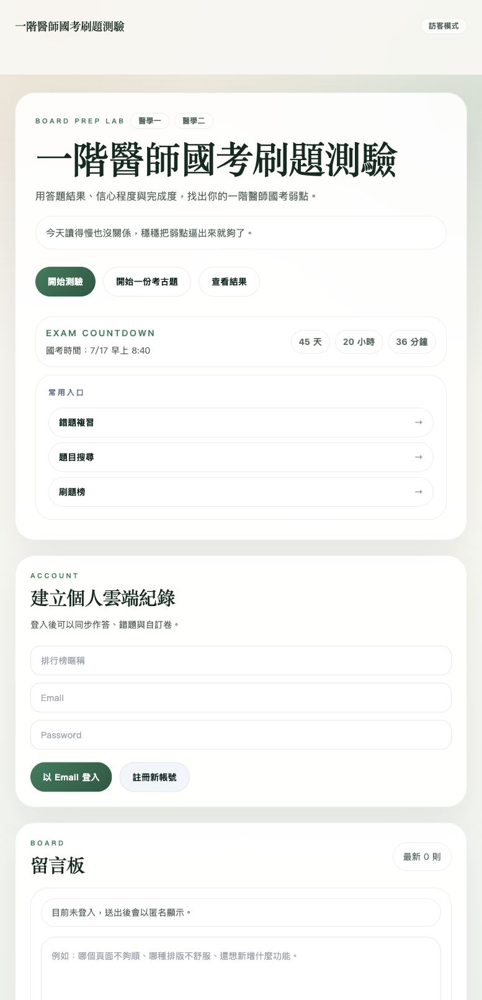
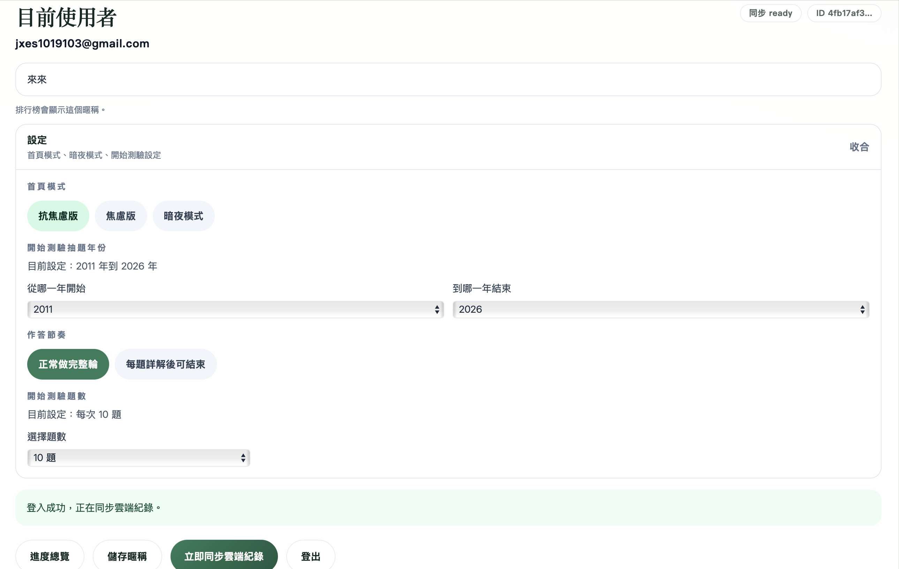
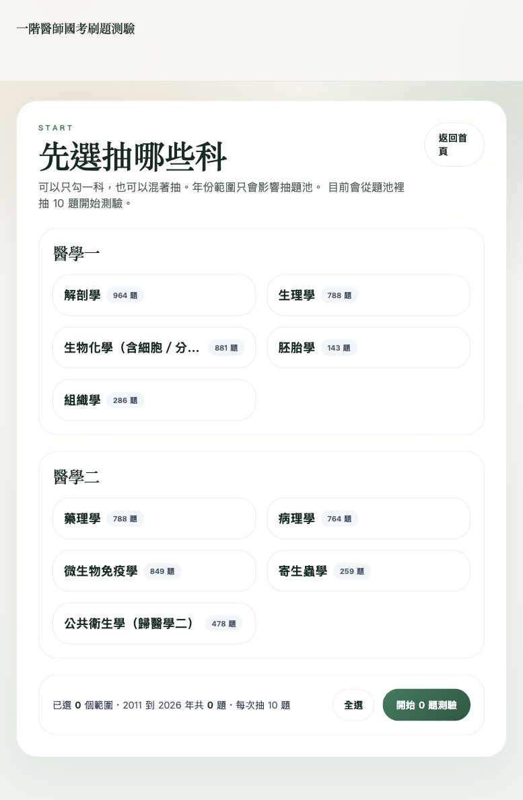
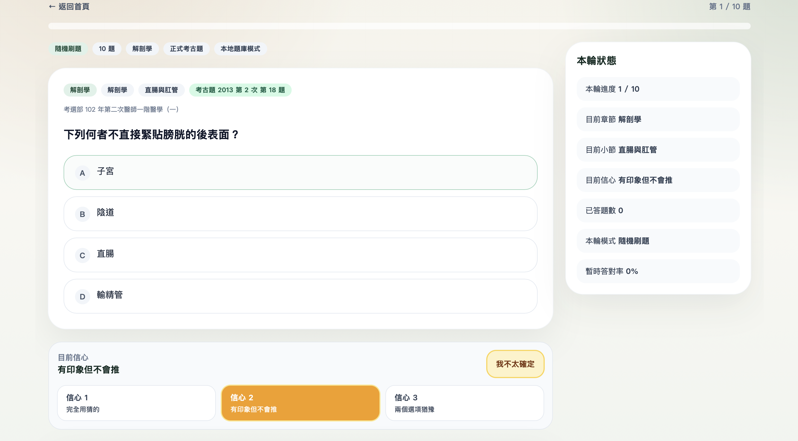
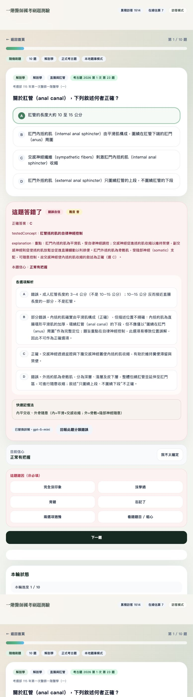
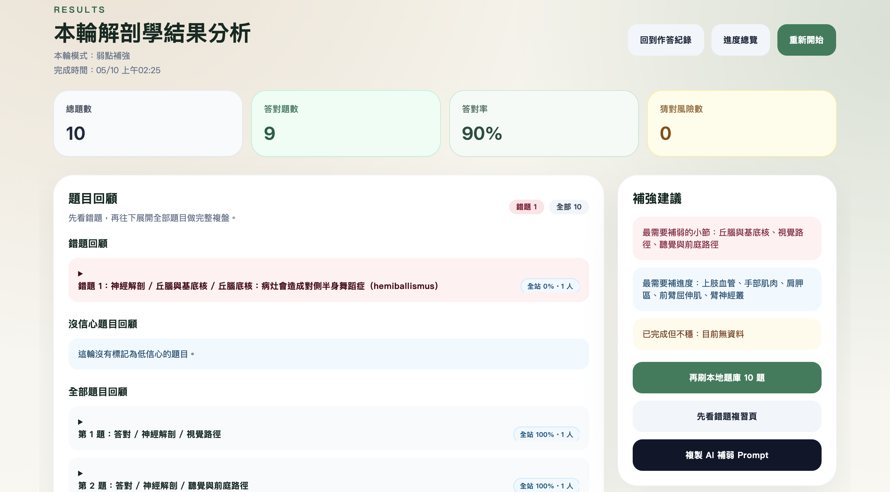
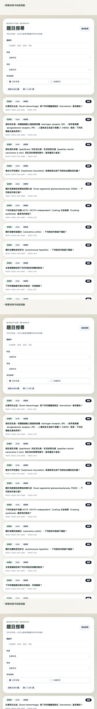

這份手冊整理網站目前最重要的使用方式與功能設計，從開始刷題、信心紀錄、AI 詳解，到錯題複習、自訂卷與搜尋整理成一份完整導覽。
首頁是整個網站的操作中樞。你可以從這裡快速進入一般刷題、整份考古題、查看結果、錯題複習、自訂卷與題目搜尋。對第一次使用的人來說，先熟悉首頁的節奏最重要。
開始測驗、開始一份考古題、查看結果、錯題複習、自訂卷模式、題目搜尋，幾乎所有高頻功能都從首頁進。
除了入口外，首頁也會顯示訪客數、在線估算、留言板，以及目前使用者區塊的設定控制。

設定集中在目前使用者區塊裡，不另外拆成複雜頁面。這裡的重點不是只換外觀，而是直接影響你的抽題範圍、作答節奏與跨裝置同步。
登入後，像焦慮版 / 抗焦慮版、暗夜模式、開始測驗年份範圍、題數偏好等都會跟帳號走。
可以先設定只抽某些年份的題目，也能決定一次做幾題，或開啟每題詳解後可結束。
如果你正在複習某幾年的題目，先在設定裡調整年份範圍，再回到開始測驗，抽題會更貼近你現在的讀書策略。

一般散題刷題會先從開始測驗頁選科，再進入單題作答。這一段最重要的不是只做對，而是把作答信心一起記錄下來，後面系統才抓得到你真正不穩的地方。

可以自由勾選要抽哪些科，也會看到目前題池內總共有多少題。年份範圍只影響抽題池，不會動到正式題庫本身。
每題都會看到題目、選項、題目來源與信心選擇器。你送出前可以先決定自己是有把握、普通、還是不太確定。
這個網站不只記錄你有沒有答對，還會記錄你答題時的把握程度，這樣後面才分得出來哪些是錯題、哪些是答對但不穩。

題目送出後，這個網站最有價值的區域才真正開始。你不只會看到正解，還能利用 AI 詳解、分類回報、錯因標記與自由結束測驗等功能，把一次刷題變成真正有整理價值的回顧。

如果原始題庫講得不夠清楚，可以直接補一份新的 AI 詳解。現在補完後會同步到共享詳解，之後換裝置也看得到。
如果你覺得科目、章節、小節分錯，可以直接回報。這些回報之後會進入後台，讓站長決定是否正式套用。
答錯時可以順手記錄錯因；若你有開啟每題詳解後可結束，也能在每題詳解後自己決定要不要停在這裡。
做完一輪後，網站不只是給你一個分數，而是把這輪的錯題、低信心題、章節弱點與補強提示都整理起來。這一段非常適合考前快速找自己哪裡還不穩。
先從作答紀錄裡挑一筆，再看那一輪的總題數、正確率、錯題回顧與低信心題回顧。
系統會依據這輪的錯題、低信心題與章節弱點，自動整理成一段可以直接貼給 ChatGPT 的補強 prompt。
錯題複習頁會把一般散題刷題累積下來的題目分成錯題與低信心題，還可以用科目篩選縮小範圍。
有些題你雖然答對，但其實是猜的、猶豫很久，這些題通常比單純錯題更值得在考前回頭補。

如果時間有限，先回頭看低信心題，再看錯題。因為很多正式考試出事的地方，不是你完全不會，而是你原本就不穩。
如果你已經不是單純想刷題，而是想整理某個主題、回查某個觀念，或把一批題目包成自己的卷，那題目搜尋和自訂卷會是最好用的兩個模組。

可搭配科目、關鍵字、年份與排序方式。搜尋範圍除了題幹，還包括詳解、記憶法、章節與小節。
可以做公開卷、輸入考卷碼、自己產卷、用 AI 智慧檢索卷，或把自己的 JSON 題目直接匯入成一張卷。
如果你有自己的 AI，可以先複製模板、請 AI 依格式輸出 JSON，再貼回網站直接生成一張自訂卷，不需要再寫程式匯入。
這個網站最值得利用的地方，不只是刷題本身，而是把 作答信心、低信心題、AI 詳解與主題整理 一起用起來。當你開始把每輪作答都當成一次可回顧、可補強、可再利用的資料，這個網站就不只是題庫，而會變成真正幫你逼出弱點的訓練系統。